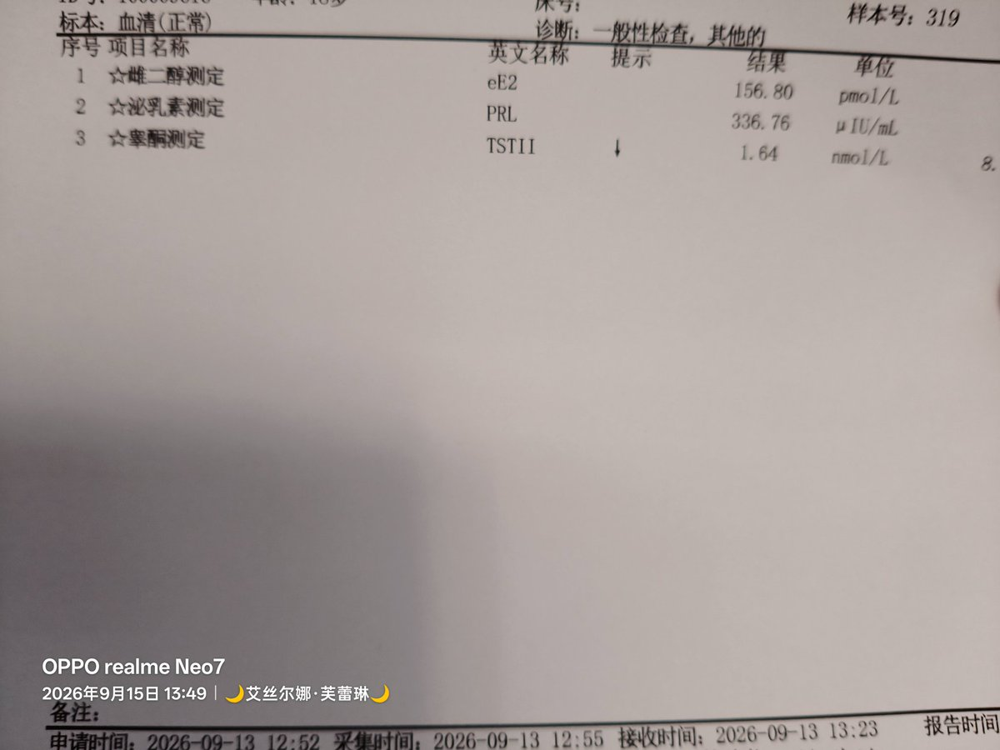
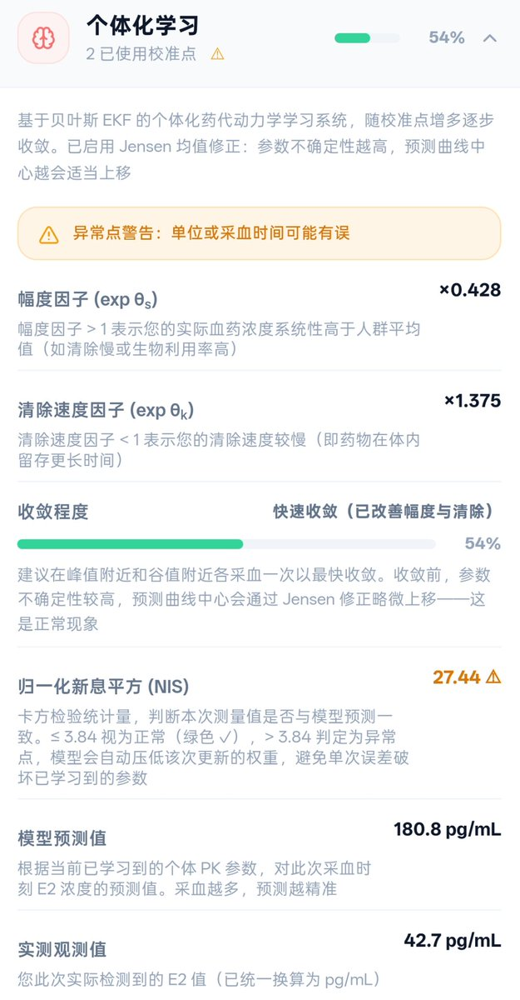

为了进一步知道情况，我上github把模型算法和校准什么的全复制粘贴给了V4.1Flash，按照大肥鱼的说法是，它测算的基准错了 → 我的真实数值跟它差得太远 → 它按规则把这次数据几乎忽略掉 → 继续用那个错的基准。
如果它按照新的数据调整自己的话会破坏掉前面的学习成果，所以为了保全前面的东西，它把这次数据的权重压到了最低。
另外，模型把通过黏膜吸收的那部分EV错估了，觉得它的水解半衰期要10小时，但实际上并没有那么长时间，在手动修正之后测算出的血药浓度是55pg/ml，接近实际数据的42.7pg/ml

如果它按照新的数据调整自己的话会破坏掉前面的学习成果，所以为了保全前面的东西，它把这次数据的权重压到了最低。
另外，模型把通过黏膜吸收的那部分EV错估了，觉得它的水解半衰期要10小时，但实际上并没有那么长时间，在手动修正之后测算出的血药浓度是55pg/ml，接近实际数据的42.7pg/ml


我在 GAHT 已经 66 天，也就是前天，再去测了一次激素三项。
相较于 8.10 那次而言，睾酮从 76 ng/dL 掉到了 47.3 ng/dL，已经达到了推荐数值的 <55 ng/dL，不需要考虑加色了。
但是 E2 谷值非常奇怪：之前我每天 2mg，隔 15 小时去测是 44.41 pg/mL；后面慢慢加到了 3.5mg，隔 10 小时去测结果只有 https://t.co/T2h6wO2XxO
相较于 8.10 那次而言，睾酮从 76 ng/dL 掉到了 47.3 ng/dL，已经达到了推荐数值的 <55 ng/dL，不需要考虑加色了。
但是 E2 谷值非常奇怪：之前我每天 2mg，隔 15 小时去测是 44.41 pg/mL；后面慢慢加到了 3.5mg，隔 10 小时去测结果只有 https://t.co/T2h6wO2XxO